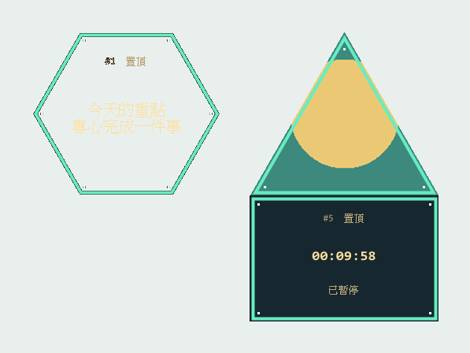

Arrange your own shapes
Hexagons, upward triangles and 3:2 rectangles. Shift-select a group, drag it together and snap near other tiles.
NICOA THE SIX / WINDOWS DESKTOP TOOL
Text, images and timers. Your desktop, arranged your way.
Keep a note, a picture or a timer within reach. Pick a shape and make a small space of your own on the desktop.
Windows 10 / 11 x64 · Portable ZIP

Hexagons, upward triangles and 3:2 rectangles. Shift-select a group, drag it together and snap near other tiles.
Display text, PNG / JPEG / BMP images, elapsed-time timers or countdowns.
Adjust size, font and background transparency. Choose solid, pixel, RGB or single-color breathing borders.
Export JSON with embedded images. Replace or merge on import without finding every image again.
For Windows 10 / 11 x64. No Visual Studio, Python, .NET, extra runtime packages or administrator permissions required. Closing the controller only hides it; choose Save and exit DeskTiles from a context menu or the tray to quit.
Original Chinese guide Markdown · Original project README Markdown · English guide Markdown · English README Markdown
SHA-256
77b336514c7a961abe52dcd579ec4e20ad41e0fd8b6b4099deaf1ab6b789e8a8The original ZIP retains its third-party MIT license notices and includes the Windows build and documentation.
The project-provided validation summary reports 170 core checks and 123 Windows integration checks passed, including running the extracted ZIP build.
Testing continues across Windows versions, DPI, multiple displays, Explorer restarts, large layouts and sustained workloads. Performance samples are short local observations, not guarantees for every computer. A Linux version has not been developed.
Download the original validation summary ↓
C++17 / Win32 / GDI+ · The portable build is ready to run; source projects require a separate build.